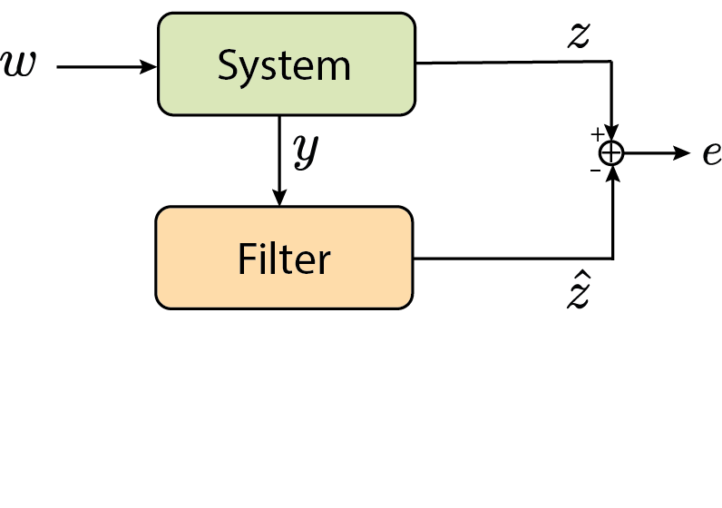
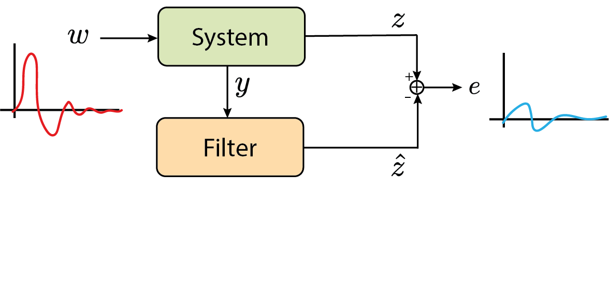

Introduction to Robust $\mathcal{H}_2/\mathcal{H}_\infty$ Filtering
Prof. Dr. Marcos Rogério Fernandes
May 11, 2026
Objectives
The objectives of this lecture are to understand:
- State estimation problem with disturbances;
- Filtering error system dynamics;
- $\mathcal{H}_2$ filtering LMI formulation;
- $\mathcal{H}_\infty$ filtering LMI formulation;
- Multi-objective $\mathcal{H}_2/\mathcal{H}_\infty$ filtering;
- Robust filtering for systems with polytopic uncertainty;
References
- S. BOYD, L. GHAOUI, E. FERON, and V. BALAKRISHNAN. Linear Matrix Inequalities in System and Control Theory. SIAM, 1994.
- Lecture notes da disciplina IA892 - Análise e Controle de Sistemas Lineares por Desigualdades Matriciais Lineares (LMIs),
Profs. Ricardo C. L. F. Oliveira e Pedro L. D. Peres, da Faculdade de Engenharia Elétrica e de Computação (FEEC) da Universidade Estadual de Campinas (Unicamp). https://ricfow.fee.unicamp.br/IA892/ia892.htm
The Filtering Problem
$$ \begin{aligned} \dot{x}&=Ax+B_w w\\ y&=Cx+D_w w\\ z&=Ex \end{aligned} $$
$w$ is the disturbance/noise, $y$ is the measured output, and $z$ is the signal to be estimated.
The Filtering Problem

Full-Order Filter Structure
$$ \begin{aligned} \dot{\hat{x}}&=A_f \hat{x}+B_f y\\ \hat{z}&=C_f \hat{x}+D_f y \end{aligned} $$
The goal is to find $\{A_f, B_f, C_f, D_f\}$ that minimizes the estimation error $e = z - \hat{z}$ in some sense ($\mathcal{H}_2$ or $\mathcal{H}_\infty$).
Standard Observer-based Filter
$$ \begin{aligned} \dot{\hat{x}}&=A\hat{x}+L(y-C\hat{x}) \\ \hat{z}&=E\hat{x} \end{aligned} $$
where $L$ is the observer gain to be designed.
Standard Observer-based Filter
$$ \begin{aligned} \dot{\hat{x}}&=(A-LC)\hat{x}+Ly \\ \hat{z}&=E\hat{x} \end{aligned} $$
where $L$ is the observer gain to be designed. Note that $$ A_f=A-LC,\quad B_f=L, \quad C_f=E,\quad D_f=0 $$
Filtering Error Dynamics
$$ \begin{aligned} \dot{\epsilon} &= (A-LC)\epsilon + (B_w-LD_w)w\\ e &= E\epsilon \end{aligned} $$
This is an autonomous system driven by $w$, where $e$ is the output.
Filtering Error Dynamics
$$ \begin{aligned} \dot{\epsilon} &= \underbrace{(A-LC)}_{A_f}\epsilon + \underbrace{(B_w-LD_w)}_{B_{wf}}w\\ e &= \underbrace{E}_{C_f}\epsilon+\underbrace{0}_{D_{wf}}w \end{aligned} $$
This is an autonomous system driven by $w$, where $e$ is the output.
$\mathcal{H}_\infty$ Filtering
Minimize the peak gain from $w$ to $e$:
$$ \min_L \|G_{ew}\|_\infty $$
This provides a filter that is robust against the worst-case disturbance.
$\mathcal{H}_\infty$ Filtering
Minimize the peak gain from $w$ to $e$:

$\mathcal{H}_\infty$ norm via LMI
$$ \begin{align*} & \quad\quad\quad\quad \quad\quad \min_{\mu,P=P^\trp \succ 0} \mu\\ \text{s.t.} & \left[\begin{array}{cc} A_f^{\trp} P+P A_f+C_f^{\trp} C_f & P B_{wf}+C_f^{\trp} D_{wf} \\ B_{wf}^{\trp} P+D_{wf}^{\trp} C_f & D_{wf}^{\trp} D_{wf}-\mu \mathbf{I} \end{array}\right]\prec 0 \end{align*} $$
and $$ \|G\|_\infty= \sqrt{\mu} $$$\mathcal{H}_\infty$ norm via LMI
$$ \begin{align*} & \quad\quad\quad\quad \quad\quad \min_{\mu,P=P^\trp \succ 0} \mu\\ \text{s.t.} & \left[\begin{array}{cc} A_f^{\trp} P+P A_f & P B_{wf}+C_f^{\trp} D_{wf} & C_f^\trp \\ B_{wf}^{\trp} P+D_{wf}^{\trp} C_f & D_{wf}^{\trp} D_{wf}-\mu \mathbf{I} & 0 \\ C_f & 0 & -I \end{array}\right]\prec 0 \end{align*} $$
$\mathcal{H}_\infty$ Filtering LMI (1/2)
$$ \begin{bmatrix} (A-LC)^\trp P + P(A-LC) & P(B_w-LD_w) & E^\trp\\ \star & -\mu I & 0\\ \star & \star & -I \end{bmatrix} \prec 0 $$
This is not an LMI due to $P LC$ and $P L D_w$ terms.
Optimal $\mathcal{H}_\infty$ Filtering via LMI
$$ \min_{\mu,P,Y} \mu\\ \begin{bmatrix} A^\trp P + PA - C^\trp Y^\trp - YC & PB_w - YD_w & E^\trp\\ \star & -\mu I & 0\\ \star & \star & -I \end{bmatrix} \prec 0 $$
After solving for $P$ and $Y$, the gain is $L = P^{-1}Y$.
The Robust Filtering Problem
$$ \begin{aligned} \dot{x}&=A(\alpha)x+B_w(\alpha) w\\ y&=C(\alpha)x+D_w(\alpha) w\\ z&=Ex \end{aligned} $$
$w$ is the disturbance/noise, $y$ is the measured output, and $z$ is the signal to be estimated.
Robust $\mathcal{H}_\infty$ Filtering via LMI
$$ \min_{\mu,P,Y} \mu\\ \begin{bmatrix} A_i^\trp P + PA_i - C_i^\trp Y^\trp - YC_i & PB_{w,i} - YD_{w,i} & E^\trp\\ \star & -\mu I & 0\\ \star & \star & -I \end{bmatrix} \prec 0 $$
for all $i=1,\ldots,N$. After solving for $P$ and $Y$, the gain is $L = P^{-1}Y$
$\mathcal{H}_2$ Filtering
Minimize the energy of the impulse response (or variance for white noise):
$$ \min_L \|G_{ew}\|_2 $$
Note: requires $D_{wf} = 0$ (no direct feedthrough from $w$ to $e$).
In our error system, $D_{wf} = 0$ if $E(B_w - LD_w) = 0$ is not required, but rather the transfer function must be strictly proper.
$\mathcal{H}_2$ norm via LMI (case 1)
$$ \|G_{ew}\|_2^2=\text{tr}(C_f P C_f^\trp) $$ such that
$$ \inf_{P=P^\trp \succ 0} \text{tr}(C_f P C_{f}^\trp) \\ \text{s. t.} \\ A_fP+PA_f^\trp +B_{wf}B_{wf}^\trp\prec 0 $$
$\mathcal{H}_2$ norm via LMI (case 2)
$$ \|G_{ew}\|_2^2=\text{tr}(B_{wf}^\trp P B_{wf}) $$ such that
$$ \inf_{P=P^\trp \succ 0} \text{tr}(B_{wf}^\trp P B_{wf}) \\ \text{s. t.} \\ A_f^\trp P+PA_f +C_{f}^\trp C_{f}\prec 0 $$
$\mathcal{H}_2$ norm via LMI (case 2)
$$ \|G_{ew}\|_2^2=\text{tr}(B_{wf}^\trp P B_{wf}) $$ such that
$$ \inf_{P=P^\trp \succ 0} \text{tr}(B_{wf}^\trp P B_{wf}) \\ \text{s. t.} \\ \begin{bmatrix} A_f^\trp P+PA_f & C_f^\trp \\ C_f & -I \end{bmatrix} \prec 0 $$
$\mathcal{H}_2$ Filter via LMI
$$ \inf_{P,L} \text{tr}((B_w-LD_w)^\trp P (B_w-LD_w)) \\ \text{s. t.} \\ \begin{bmatrix} (A-LC)^\trp P+P(A-LC) & E^\trp \\ E & -I \end{bmatrix} \prec 0 $$
$\mathcal{H}_2$ Filter via LMI
$$ \inf_{P,L,X} \text{tr}(X) \\ \text{s. t.} \\ \begin{bmatrix} (A-LC)^\trp P+P(A-LC) & E^\trp \\ E & -I \end{bmatrix} \prec 0 , \\ \begin{bmatrix} X & B_w^\trp P-D_w^\trp L^\trp P \\ PB_w-PLD_w & P \end{bmatrix} \succ 0 $$
Optimal $\mathcal{H}_2$ Filter via LMI
$$ \inf_{P,Y,X} \text{tr}(X) \\ \text{s. t.} \\ \begin{bmatrix} A^\trp P + PA - C^\trp Y^\trp - YC & E^\trp \\ \star & -I \end{bmatrix} \prec 0 , \\ \begin{bmatrix} X & B_w^\trp P-D_w^\trp Y^\trp\\ PB_w-YD_w & P \end{bmatrix} \succ 0 $$
After solving for $P,Y$ and $X$, we get $L=P^{-1}Y$ as the filter gain.Robust $\mathcal{H}_2$ Filter via LMI
$$ \inf_{P,Y,X} \text{tr}(X) \\ \text{s. t.} \\ \begin{bmatrix} A_i^\trp P + PA_i - C_i^\trp Y^\trp - YC_i & E^\trp \\ \star & -I \end{bmatrix} \prec 0 , \\ \begin{bmatrix} X & B_{w,i}^\trp P-D_{w,i}^\trp Y^\trp\\ PB_{w,i}-YD_{w,i} & P \end{bmatrix} \succ 0,\quad \forall i $$
After solving for $P,Y$ and $X$, we get $L=P^{-1}Y$ as the filter gain.Robust Filtering: Quadratic Stability
Using a single $P$ for all vertices is called Quadratic Stability/Performance.
It can be conservative.
$$ P_i = P, \quad \forall i $$
For filters, we can sometimes use parameter-dependent $P(\alpha)$, but the implementation of $L(\alpha)$ might be complex.The Filtering Problem
$$ \begin{aligned} \dot{x}&=Ax+B_w w\\ y&=Cx+D_w w\\ z&=Ex+D_{zw}w \end{aligned} $$
$w$ is the disturbance/noise, $y$ is the measured output, and $z$ is the signal to be estimated.
Full-Order Filter Structure
$$ \begin{aligned} \dot{\hat{x}}&=A_f \hat{x}+B_f y\\ \hat{z}&=C_f \hat{x}+D_f y \end{aligned} $$
The goal is to find $\{A_f, B_f, C_f, D_f\}$ that minimizes the estimation error $e = z - \hat{z}$ in some sense ($\mathcal{H}_2$ or $\mathcal{H}_\infty$).
Augmented State Formulation
$$ \begin{aligned} \dot{\tilde{x}} &= \tilde{A}\tilde{x} + \tilde{B}w \\ e &= \tilde{C}\tilde{x} + \tilde{D}w \end{aligned} $$
Augmented System Matrices
$$ \begin{aligned} \tilde{A} &= \begin{bmatrix} A & 0 \\ B_f C & A_f \end{bmatrix}, \quad \tilde{B} = \begin{bmatrix} B_w \\ B_f D_{w} \end{bmatrix} \\ \tilde{C} &= \begin{bmatrix} E - D_f C & -C_f \end{bmatrix}, \quad \tilde{D} = D_{zw} - D_f D_{w} \end{aligned} $$
Stability and performance ($\mathcal{H}_2, \mathcal{H}_\infty$) criteria are then applied to this system to find the filter matrices $\{A_f, B_f, C_f, D_f\}$.
General $\mathcal{H}_2$ Filter via LMI
$$ \inf_{A_f,B_f,C_f} \text{tr}(S) \\ \text{s. t.} \\ \begin{bmatrix} \tilde{A}^\trp \tilde{P}+\tilde{P}\tilde{A} & \tilde{C}^\trp \\ \tilde{C} & -I \end{bmatrix} \prec 0 , \\ \begin{bmatrix} S & \tilde{B}^\trp \tilde{P} \\ \tilde{P}\tilde{B}& \tilde{P} \end{bmatrix} \succ 0 $$
Partitioned Lyapunov Matrix
$$ P = \begin{bmatrix} X & U^\trp \\ U & \tilde{X} \end{bmatrix}, \quad P^{-1} = \begin{bmatrix} Y & V^\trp \\ V & \tilde{Y} \end{bmatrix} $$
satisfying $PP^{-1} = I_{2n}$.The relation $XY + U^\trp V = I_n$ is fundamental. If $X-Y^{-1} \succ 0$, then non-singular $U$ and $V$ always exist. This partitioning allows for the change of variables used to linearize the filtering LMIs.
Change of Variables (H2 Filtering)
$$ \begin{aligned} \mathbf{P} &= \begin{bmatrix} P & X \\ X & X \end{bmatrix} \\ \hat{A} = X A_f, \quad &\hat{B} = X B_f, \quad \hat{C} = C_f \end{aligned} $$
where $D_f = 0$ for a well-defined $\mathcal{H}_2$ norm.More Flexible $\mathcal{H}_2$ Filter via LMI
$$ \inf_{\hat{A},\hat{B},\hat{C},P,X,Z} \text{tr}(Z) \\ \text{s. t.} \\ \begin{bmatrix} PA + A^\trp P + \hat{B}C + C^\trp \hat{B}^\trp & \hat{A} + A^\trp X + C^\trp \hat{B}^\trp & E^\trp \\ \star & \hat{A} + \hat{A}^\trp & -\hat{C}^\trp \\ \star & \star & -I \end{bmatrix} \prec 0\\ \begin{bmatrix} \mathbf{Z} & (PB_w + \hat{B}D_w)^\trp & (XB_w + \hat{B}D_w)^\trp \\ \star & P & X \\ \star & \star & X \end{bmatrix} \succ 0 $$
After solving it
Recover Filter Matrices:
$$ A_f = X^{-1} \hat{A}, \quad B_f = X^{-1} \hat{B}, \quad C_f = \hat{C}, \quad D_f = 0 $$
Then, we can implemente the filter $$ \begin{aligned} \dot{\hat{x}}&=A_f \hat{x}+B_f y\\ \hat{z}&=C_f \hat{x}+D_f y \end{aligned} $$Multi-objective $\mathcal{H}_2/\mathcal{H}_\infty$ Filtering
Find $L$ that minimizes $\mathcal{H}_2$ subject to $\mathcal{H}_\infty$ constraint:
$$ \begin{aligned} &\inf \mu \\ \text{s.t. } & \text{H2 LMIs (with } \mu, P, Y, X) \\ & \text{Hinf LMI (with } \gamma_{max}, P, Y) \end{aligned} $$
Note: Using the same $P$ for both objectives is required if we want a single gain $L = P^{-1}Y$.Homework (T9)
- Derive the LMI for the $\mathcal{H}_\infty$ and $\mathcal{H}_2$ Robust Filters in discrete time for the standard observer form.
- Write a summary with your own words about the derivation in LaTeX and send it via e-disciplina.